Aunque con el tiempo en su contra , el candidato republicano John McCain llegó a Michigan dispuesto a presentar batalla a su correligionario George W. Bush y a arrebatarle la victoria en unas primarias vitales para su campaña.
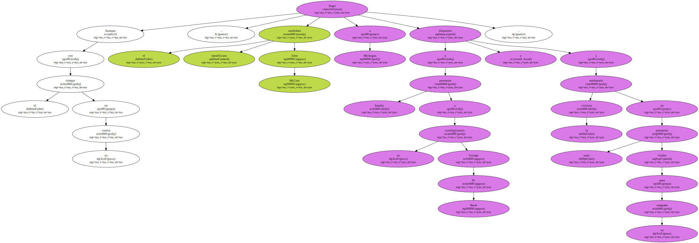El Partido Republicano celebra mañana , martes , en Michigan y Arizona sus elecciones primarias , abiertas - además de a sus votantes - a los demócratas e independientes registrados.
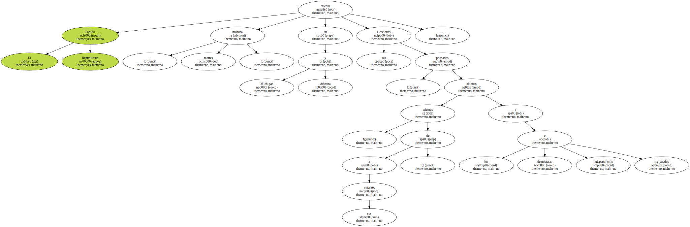El mensaje de McCain , senador por Arizona , se ha hecho más agresivo después de la victoria de Bush en Carolina del Sur , y en los escasos tres días que van a separar un proceso de otro , ha querido dejar clara la diferencia que separa a ambos.
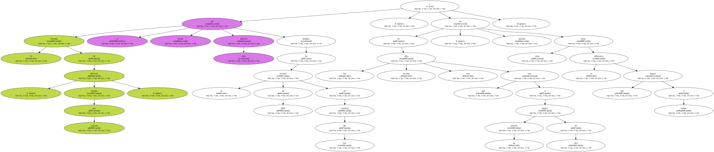Con un " si el gobernador Bush es un reformador , yo soy astronauta " , John McCain ridiculizó las credenciales reformistas con que el hijo del ex presidente George Bush se presenta ante los electores conservadores y le acusó de querer robarle votos utilizando sus propias ideas.
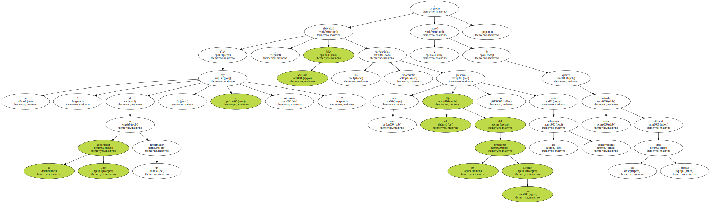Pero frente a la presión que McCain tiene encima , el gobernador de Texas , George W. Bush , se presenta exultante ante el público de Michigan , reforzado por haberse metido en el bolsillo a los votantes conservadores de Carolina del Sur.

En Michigan , el gobernador de Texas ha preferido concentrar sus ataques en el presidente de EEUU , Bill Clinton , y en el vicepresidente y candidato demócrata , Al Gore , insistiendo en que " quedan 260 días para el fin de la era Clinton-Gore " , mientras que a McCain se refirió con un " espero que se haya aprendido la lección " en Carolina del Sur.
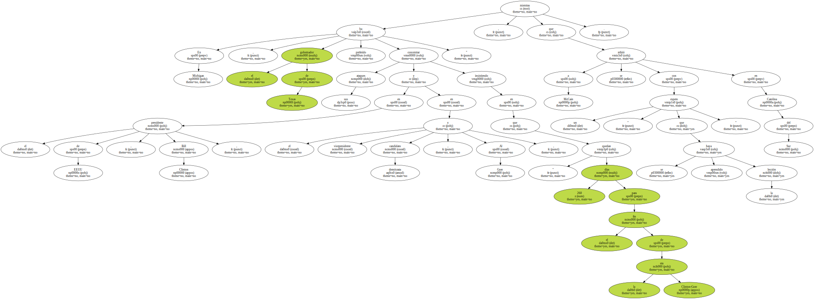McCain , de 62 años , senador por Arizona desde hace 13 años , ex piloto de la Marina y prisionero de guerra en Vietnam durante casi 6 años , dio un mitin en la localidad de Lavonia , muy cerca de Detroit , en el que mostró su capacidad de rehacerse después del golpe de Carolina del Sur.
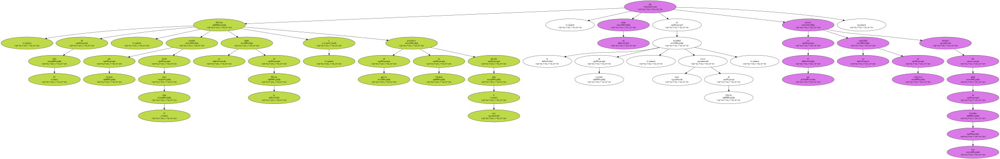Mientras sus seguidores coreaban su nombre , el senador , acompañado de su esposa Cindy y de sus hijos , recordaba que la vida le ha dado unos cuantos golpes , en referencia a su carrera militar y a los años en que fue prisionero de guerra después de que su avión se estrellara en la guerra de Vietnam.
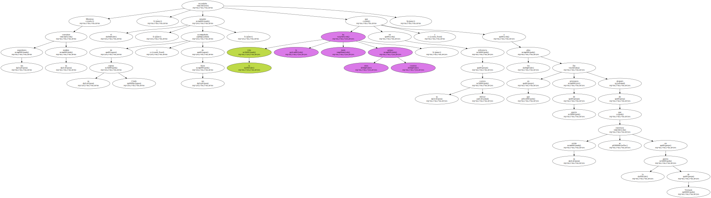" He estrellado unos cuantos aviones , y me pasé unos años en un hotel en el que no ponían caramelos en la almohada , por eso os digo ahora que vamos a ganar en Michigan " , dijo McCain.
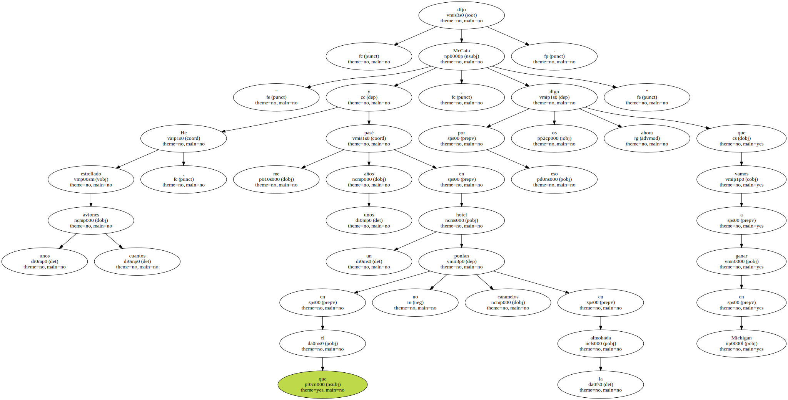En cualquier caso la contienda es un virtual cuerpo a cuerpo entre Bush y McCain porque ambos necesitan ganar.
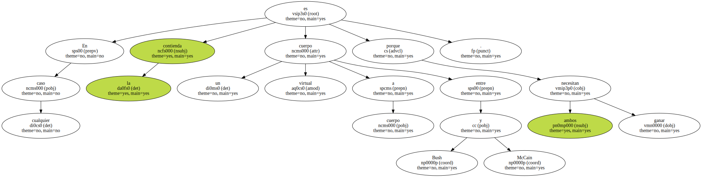Una encuesta difundida por el diario " Detroit News " da al senador por Arizona el 40 por ciento de los votos de este estado , mientras que el gobernador de Texas le pisa los talones con el 38 por ciento.
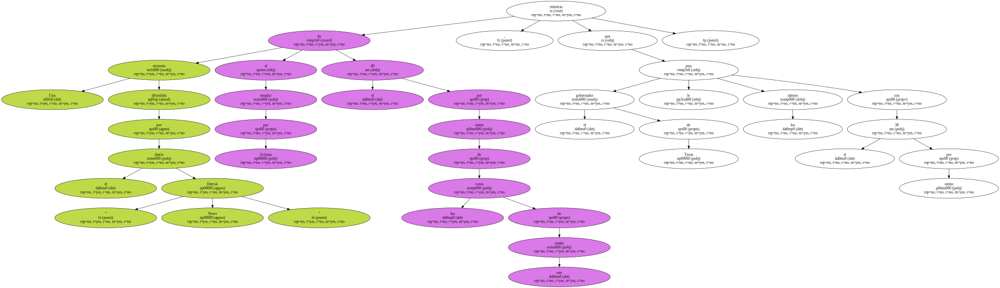Los dos republicanos se han lanzado a cautivar al 17 por ciento de los votantes indecisos , que , en un principio , pueden beneficiar al senador McCain.
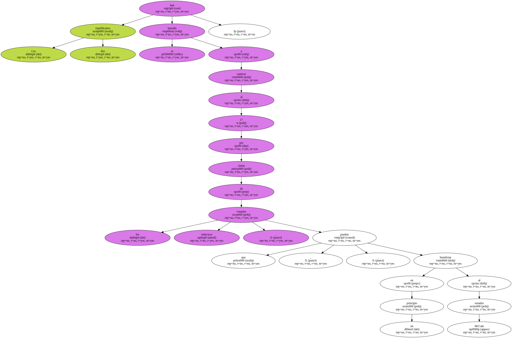Michigan , un estado industrial , con 6,7 millones de personas registradas para el voto , es política y culturalmente más variado que el mayoritariamente blanco y conservador de Carolina del Sur , y es , además , un estado en el que los candidatos con madera de independientes se han crecido ante la dificultad de las campañas.
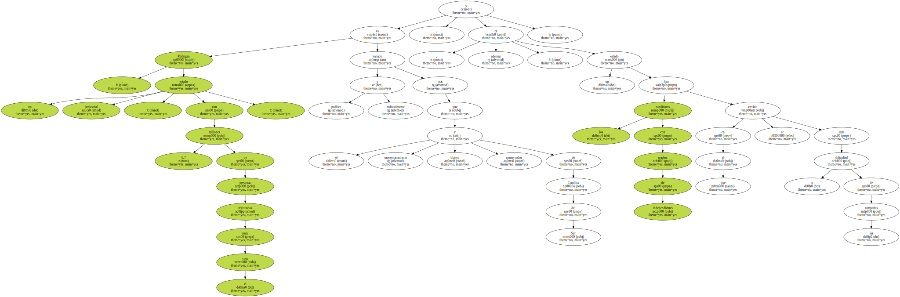Al ciudadano de Michigan le gusta votar al candidato que mejor representa el " anti-establishment " ( el poder establecido ) , en una especie de reto como el de David contra Goliat , y que ya ha contribuido a la victoria de más de un presidente.
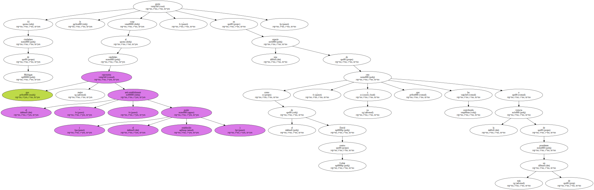Ese fue el caso de Teddy Roosevelt en 1912 o cuando los demócratas del estado dieron al republicano Ronald Reagan su voto en 1980 , pero también cuando ese voto inconformista sirvió de respaldo al multimillonario tejano Ross Perot para crear el Partido Reformista.
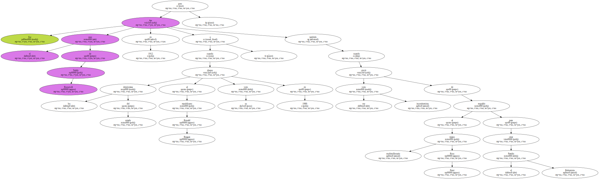" Parece una tarea de titanes , en la que la ventaja es que Michigan no es Carolina del Sur , pero McCain sólo va a tener tres días por delante , donde Bush tuvo 18 " , dijo Dante Chinni , un comentarista del diario " The Christian Science Monitor " en un programa de debates.
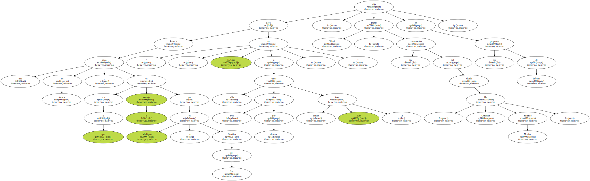En Arizona , el estado al que John McCain representa en el Senado , la victoria parece más segura para éste.
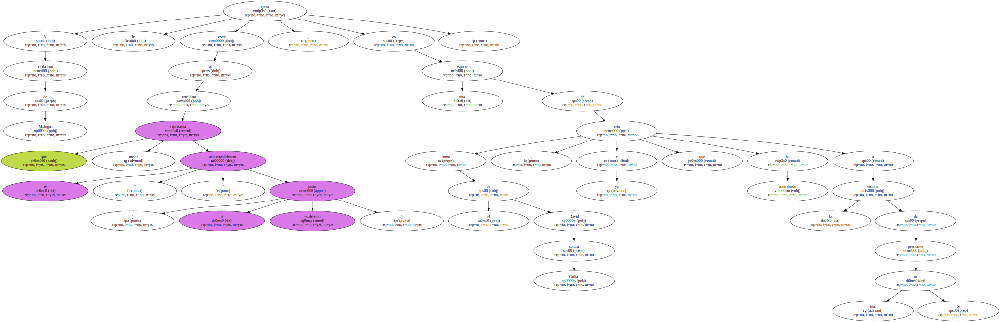También es un estado radicalmente diferente a Carolina del Sur , pues Arizona comparte frontera con México y es uno de los lugares en que la inmigración legal e ilegal es mayor.
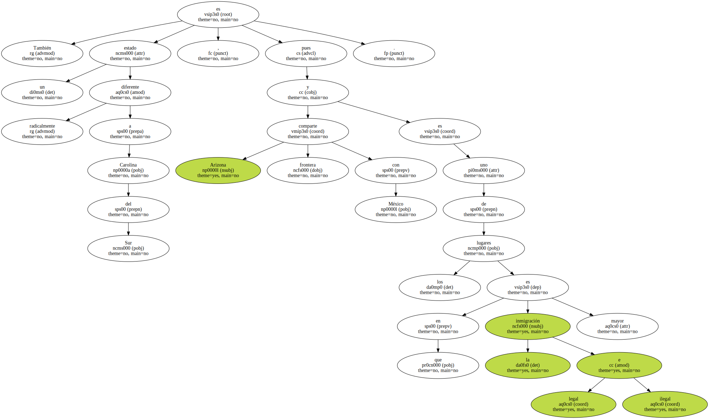